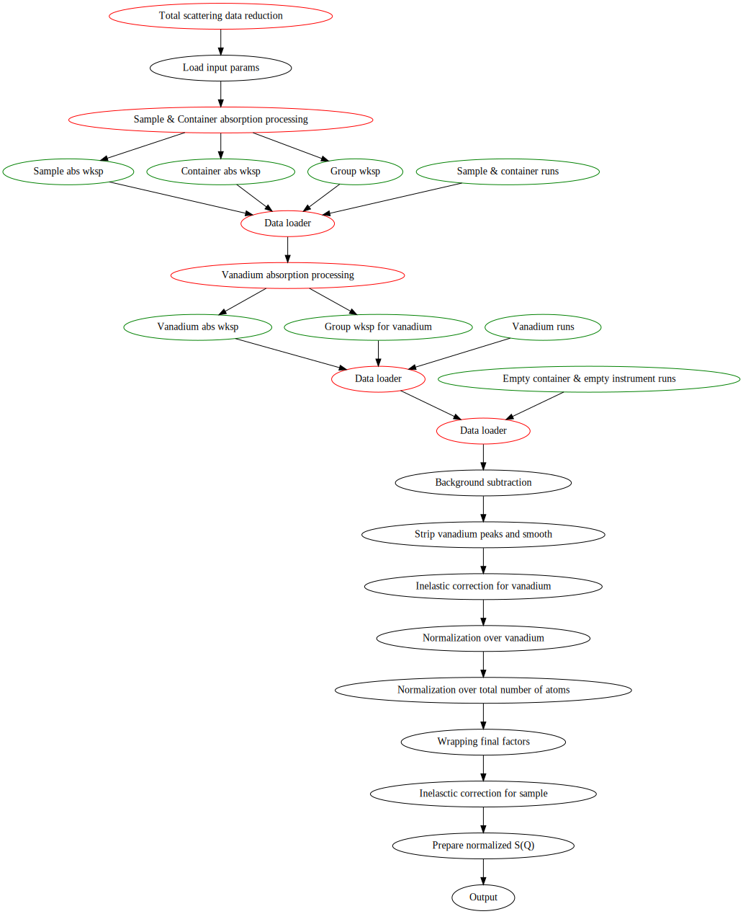
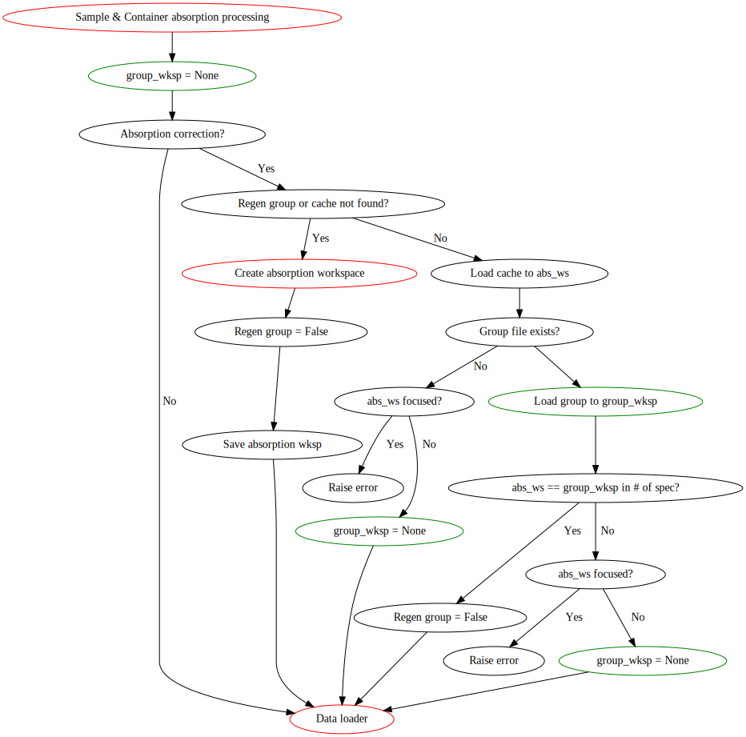
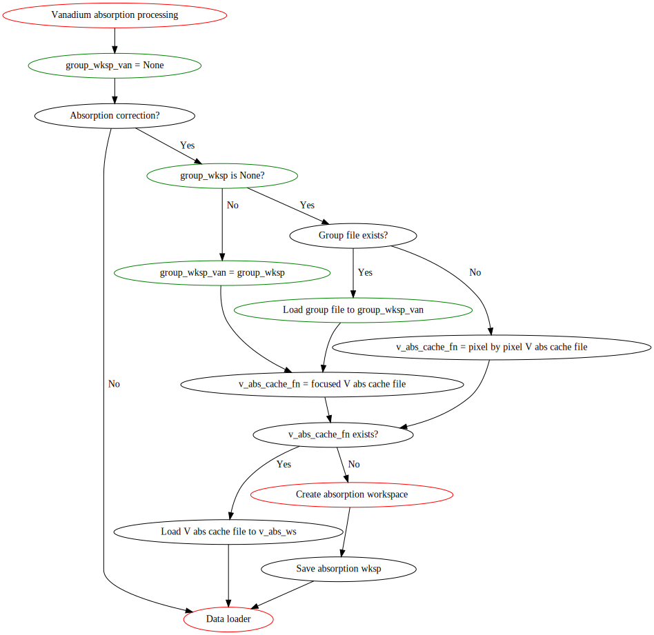
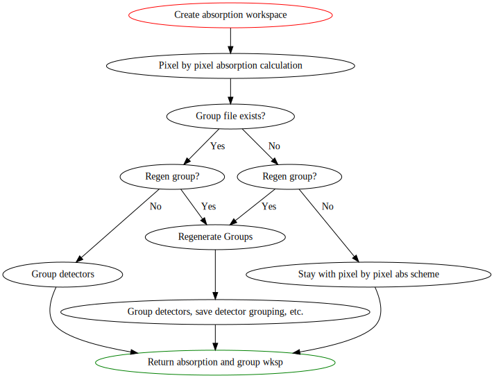
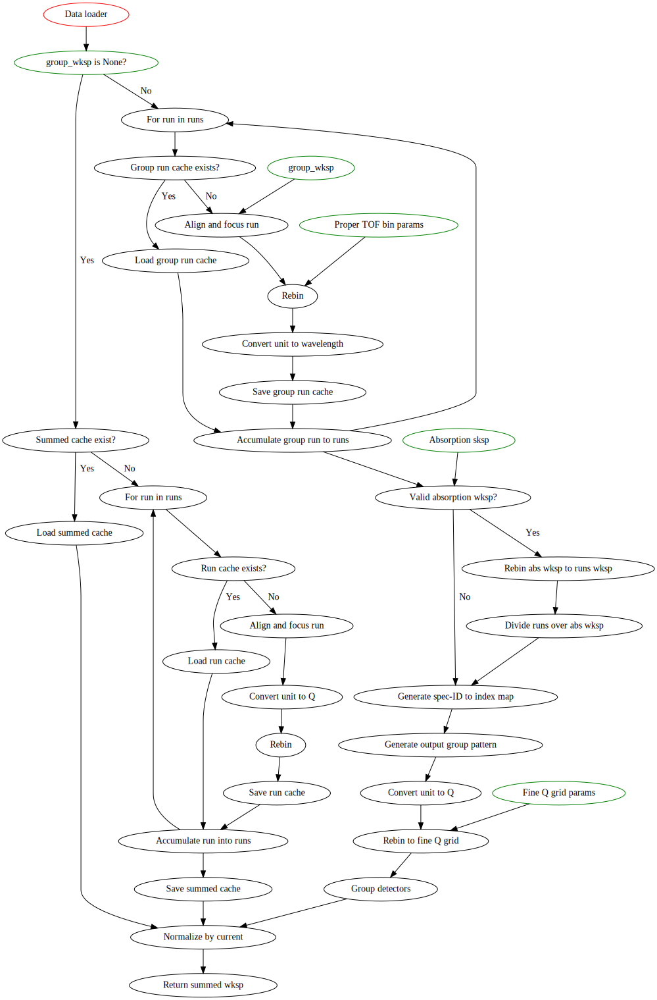

mantidtotalscattering workflow#
mantidtotalscattering (MTS) is a modern engine for reducing neutron total scattering data based on Mantid framework. It is a high-level framework which utilizes various low-level Mantid algorithms, going through all the necessary steps to bring the raw neutron time-of-flight scattering data to user-end analyzable data. By going through the whole workflow and applying a series of necessary corrections, it is expected that the end product is the neutron total scattering data sitting on an absolute scale. Here, a high-level flow of MTS will be presented with necessary (and only necessary) explanations. A corresponding flow of the codebase can be found here at the MTS GitHub repo. It is impossible to present all the nitty-gritties of the codebase, but we believe the presentation of the flow here should give one a fairly good starting point by understanding how the codebase of MTS is organized.
First, some notations in the flowchart are explained as below,
The top node colored with red in each graph refers to the overall scope of the corresponding graph. All the other red-colored nodes included in each graph are callers to other scopes.
The green-colored nodes represent parameters that will be passed around scopes.
In the
Data loaderroutine, there is a step of generating the output group pattern (see the blue coloredGenerate output group patternstep in theData loaderscope). Initially, when generating the grouping scheme according to the similarity of the absorption spectra, such sub-grouping of detectors were performed individually for each of the final output groups. For the moment, we are staying with the physical banks as the final output grouping scheme and thus the sub-grouping was performed accordingly for each of the physical banks. Such a way of sub-grouping makes it easier to re-group those sub-groups into the final output groups since there is no cross-over among the final output groups in terms of sub-grouping. Then withinData loader, at the stage of grouping detectors after a series of operations (absorption correction ,etc.), we then re-group those sub-groups according to which final output group they belong to. This requires us using the spectra ID and using theGroupingPatternparameter in theGroupDetectorsalgorithm. TheGenerate output group patternis for such a purpose.
The main MTS flow#

Sample & container absorption processing#

Vanadium absorption processing#

Create absorption workspace routine#

Data loader#
